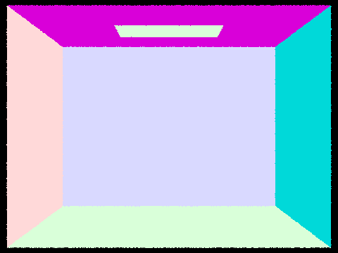
Rudraksh Awasthi · CS184/284A · Spring 2026
Homework 3: PathTracer Write-Up
Part 1
Ray Generation and Scene Intersection
Task 1: Generating Camera Rays
The virtual camera sits at the origin of camera space and
looks along the \(-Z\) axis. A sensor plane lives at \(z = -1\), and its extents
are determined by the horizontal and vertical field of view:
\[
x_\text{sensor} \in \bigl[-\tan(\tfrac{\text{hFov}}{2}),\; \tan(\tfrac{\text{hFov}}{2})\bigr], \quad
y_\text{sensor} \in \bigl[-\tan(\tfrac{\text{vFov}}{2}),\; \tan(\tfrac{\text{vFov}}{2})\bigr]
\]
Given normalized image coordinates \((x, y)\), the corresponding sensor point in camera space is:
\[
\mathbf{p}_\text{cam} = \Bigl((2x - 1)\tan\tfrac{\text{hFov}}{2},\;\; (2y - 1)\tan\tfrac{\text{vFov}}{2},\;\; -1\Bigr)
\]
This direction is then rotated into world space using the camera-to-world matrix
c2w and normalized. The resulting ray originates at the camera
position pos with min_t = nClip and max_t = fClip.
Task 2: Generating Pixel Samples
A single ray per pixel would give an aliased result. Instead, raytrace_pixel
generates ns_aa rays per pixel, each with a random subpixel jitter drawn
from a UniformGridSampler2D. For pixel \((x, y)\) the jittered sample
\((x + \xi_x,\; y + \xi_y)\) is normalized by the image dimensions before being
passed to generate_ray. The returned radiance values are averaged to
form a Monte Carlo estimate of the pixel integral:
\[
\hat{L}(x,y) = \frac{1}{N} \sum_{i=1}^{N} L\!\left(\text{ray}_i\right)
\]
The result is written to sampleBuffer via update_pixel,
and the sample count is stored in sampleCountBuffer (needed by the
adaptive sampler in Part 5).
Task 3: Ray-Triangle Intersection
Triangle intersection is implemented using the Möller–Trumbore algorithm, which avoids explicitly computing the triangle's plane. Given a ray \(\mathbf{r}(t) = \mathbf{o} + t\mathbf{d}\) and triangle vertices \(\mathbf{p}_1, \mathbf{p}_2, \mathbf{p}_3\), the system \[ \mathbf{o} + t\mathbf{d} = (1 - b_1 - b_2)\,\mathbf{p}_1 + b_1\,\mathbf{p}_2 + b_2\,\mathbf{p}_3 \] is solved in closed form using cross and dot products. The solution gives \([t,\; b_1,\; b_2]\). The intersection is valid only when:
- \(t \in [\texttt{min\_t},\; \texttt{max\_t}]\) — the hit is within the ray's active segment
- \(b_1 \geq 0,\; b_2 \geq 0,\; b_1 + b_2 \leq 1\) — the hit point is inside the triangle
On a valid hit, ray.max_t is tightened to \(t\) so that subsequent
intersection tests automatically reject farther hits. The surface normal is
interpolated from the per-vertex normals using the barycentric weights:
\[
\mathbf{n} = (1 - b_1 - b_2)\,\mathbf{n}_1 + b_1\,\mathbf{n}_2 + b_2\,\mathbf{n}_3, \quad \text{normalized}
\]
This gives smooth shading across curved surfaces even though the geometry is
faceted. The Intersection struct is then populated with \(t\),
\(\mathbf{n}\), the primitive pointer, and the surface BSDF.
Task 4: Ray-Sphere Intersection
Substituting the ray equation into the sphere equation
\(|\mathbf{r}(t) - \mathbf{c}|^2 = R^2\) yields the quadratic:
\[
a\,t^2 + b\,t + c = 0, \qquad
a = |\mathbf{d}|^2, \quad
b = 2\,\mathbf{d} \cdot (\mathbf{o} - \mathbf{c}), \quad
c = |\mathbf{o} - \mathbf{c}|^2 - R^2
\]
If the discriminant \(\Delta = b^2 - 4ac < 0\) the ray misses the sphere entirely.
Otherwise the two roots are:
\[
t_{1,2} = \frac{-b \mp \sqrt{\Delta}}{2a}
\]
The smaller root \(t_1\) is tested first; if it falls outside
\([\texttt{min\_t},\; \texttt{max\_t}]\) the larger \(t_2\) is tried.
The surface normal at the hit is computed analytically as the unit vector from
the sphere centre to the intersection point:
\[
\mathbf{n} = \frac{\mathbf{r}(t) - \mathbf{c}}{R}
\]
The Intersection record is then filled identically to the triangle case,
and ray.max_t is tightened.
Normal-Shading Renders


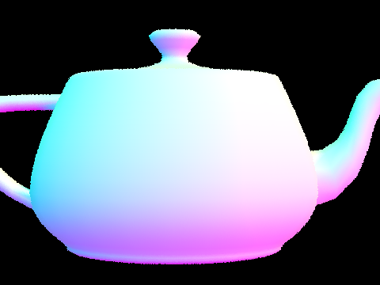
Part 2
Bounding Volume Hierarchy
Task 1: Constructing the BVH
Without acceleration, every ray must be tested against every primitive (O(n) per ray), which makes complex meshes completely infeasible. The BVH organizes primitives into a binary tree of axis-aligned bounding boxes so that large swaths of geometry can be skipped with a single cheap box test, bringing the per-ray cost down to O(log n).
Construction is recursive. At each call we receive an iterator range
[start, end] into the global primitive list:
-
Compute the node's bounding box by expanding an initially empty
BBoxover every primitive's bounding box in the range. -
If the count \(\leq\)
max_leaf_size(default 4), create a leaf node, set itsstart/enditerators, and return. - Build the bounding box of all primitive's centroids and pick the axis along which it has the largest extent. Splitting the centroids and pick the axis along which it has the largest extent. Splitting the widest dimension tends to produce compact, balanced subtrees.
-
Compute the average centroid along the chosen axis as the
split point, then use
std::partitionto reorder primitives so those whose centroid lies below the split go left, the rest go right. -
If all centroids fall on one side
(e.g. many coincident primitives), the partition produces an empty half and the
algorithm would recurse forever. This is caught by checking whether
mid == startormid == endand forcing a balanced midpoint split instead. - Recurse on each half and attach the results as
landr.
Task 2: Intersecting the Bounding Box
BBox::intersect uses the slab method. Each axis-aligned
pair of planes is treated as a "slab," and the ray is intersected with both planes
to produce a \([t_\text{near},\; t_\text{far}]\) interval. Accumulating the
intersection of all three slab intervals gives the range of \(t\) for which the
ray is inside the box:
\[
t_\text{near}^{(i)} = \frac{\text{min}_i - o_i}{d_i}, \qquad
t_\text{far}^{(i)} = \frac{\text{max}_i - o_i}{d_i}
\]
If \(d_i < 0\) the two values are swapped so \(t_\text{near} \leq t_\text{far}\)
always holds. The overall entry time is \(\max_i t_\text{near}^{(i)}\) and the
exit time is \(\min_i t_\text{far}^{(i)}\). A hit occurs when entry \(\leq\) exit
and the interval overlaps \([\texttt{min\_t},\; \texttt{max\_t}]\). Using the
pre-computed ray.inv_d avoids per-axis division and correctly handles
rays aligned with an axis via IEEE 754 infinity arithmetic.
Task 3: Intersecting the BVH
Both traversal functions test the current node's bounding box first using a
local copy of t0, t1 so the ray's valid interval is not
mutated by the bbox test. If the box is missed, the subtree is pruned immediately.
has_intersection can short-circuit: as soon as any primitive
reports a hit, the function returns true without testing the other child.
This makes shadow-ray queries very fast.
intersect must find the nearest hit, so both children
are always visited when their bounding box is hit. The key insight is that
primitive intersection functions tighten ray.max_t on every hit, so
after the left subtree is processed, the right subtree's bbox test automatically
rejects any branch that could only produce a farther intersection — no explicit
distance comparison is needed in the traversal code itself.
Large Scenes — Only Feasible With BVH
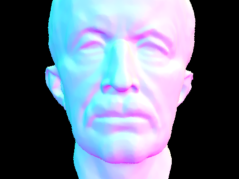
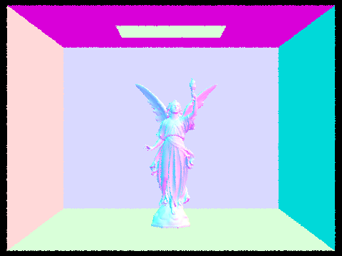
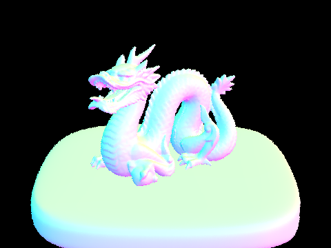
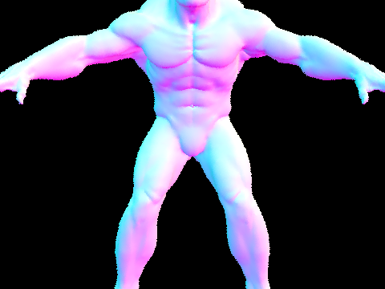
Rendering Time Comparison: With vs. Without BVH
| Scene | Without BVH (s) | With BVH (s) | Speedup |
|---|---|---|---|
| maxplanck.dae | 2.725 | 0.015 | 181.7x |
| CBlucy.dae | 8.738 | 0.010 | 873.8x |
| dragon.dae | 6.773 | 0.012 | 564.4x |
| beast.dae | 3.702 | 0.011 | 336.5x |
The BVH delivers dramatic speedups across all four scenes, ranging from 182× on maxplanck to 874× on CBlucy. Without BVH acceleration, every ray must test against every primitive in the scene, giving O(n) intersection cost per ray. For a 480×360 image with tens or hundreds of thousands of triangles, that cost dominates entirely. With the BVH, each ray descends the tree and prunes entire subtrees the moment their bounding box is missed, reducing the average number of primitive tests to roughly O(log n). The larger speedups on CBlucy and dragon compared to maxplanck reflect their higher primitive counts: CBlucy has on the order of 100k+ triangles, so the gap between linear and logarithmic traversal is correspondingly wider. The tiny with-BVH times (10–15 ms) show the traversal overhead is negligible — the bottleneck has fully shifted from intersection testing to other fixed costs like BVH construction and image I/O.
Part 3
Direct Illumination
Task 1: Diffuse BSDF
The BSDF evaluation is just \( f(\omega_i \to \omega_r) = \frac{\rho}{\pi} \), where
\(\rho\) is the reflectance of the surface and \(\pi\) comes from
normalizing over the hemisphere so energy is conserved. The directions \(\omega_i\) and \(\omega_o\)
don't matter for a perfectly diffuse surface (it reflects the same fraction regardless of angle).
sample_f delegates to the cosine-weighted hemisphere sampler and then calls f.
Task 2: Zero-bounce Illumination
Zero-bounce radiance is the light emitted directly by the intersected surface — no scattering involved.
This is what makes the area light itself appear as a bright white rectangle in the rendered image.
The implementation simply returns isect.bsdf->get_emission(). For non-emissive surfaces
(walls, bunny, floor) this returns zero; for the area light's EmissionBSDF it returns the
configured radiance.
Task 3: Direct Lighting with Uniform Hemisphere Sampling
For hemisphere sampling, we approximate the rendering equation integral with a Monte Carlo estimator by drawing \(N\) directions \(\omega_j\) uniformly from the hemisphere around the hit point: \[ L_r(p, \omega_r) \approx \frac{1}{N} \sum_{j=1}^{N} \frac{f_r(p, \omega_j \to \omega_r)\, L_i(p, \omega_j)\, \cos\theta_j}{p(\omega_j)} \] The PDF for uniform hemisphere sampling is \(p(\omega) = \frac{1}{2\pi}\). For each sample we cast a shadow ray from the hit point in the sampled world-space direction; if it hits an emissive surface we accumulate the contribution. The \(\cos\theta\) term is just \(\omega_i.z\) in local object space since the normal is aligned with \(\hat{z}\). The final estimate is divided by \(N\).
Task 4: Direct Lighting by Importance Sampling Lights
Instead of sampling random hemisphere directions (most of which miss the light entirely), importance
sampling queries each light directly via sample_L, which returns a direction
\(\omega_i\), distance, PDF, and emitted radiance for a point on the light. We then cast a shadow ray
with max_t = distToLight - EPS_F to check for occlusion. If unoccluded, we accumulate
\( f \cdot L \cdot \cos\theta / \text{pdf} \). Delta lights (point/directional) are sampled once; area
lights are sampled ns_area_light times and averaged. Samples where
\(\cos\theta \leq 0\) (light behind the surface) are skipped outright without casting a ray.
This produces far less noise than hemisphere sampling for the same sample budget because every sample
is guaranteed to point toward a light.
Hemisphere vs. Importance Sampling Comparison
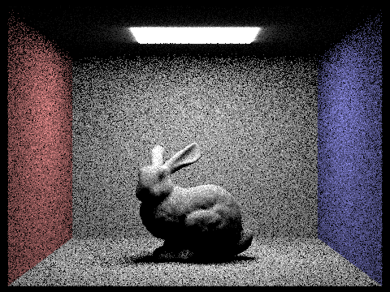
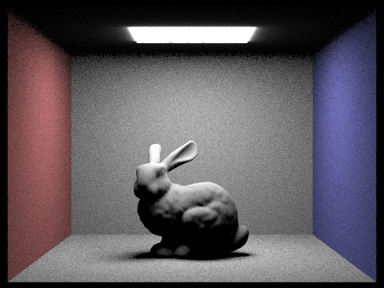
Noise vs. Number of Light Rays (Importance Sampling, s=1)
Analysis: Hemisphere vs. Importance Sampling
With uniform hemisphere sampling, directions are picked randomly from the entire upper hemisphere. This means that it’s actually pretty unlikely for any given sample to land on the (relatively small) area light. Most samples end up hitting something non-emissive, like a wall or the floor; those samples don’t contribute any light, so the estimator uses its whole sample budget on a lot of zero-value directions. While this approach technically works in expectation, it leads to very high variance with lots of visible noise, especially in the soft shadow areas. Importance sampling addresses this problem. Instead of picking directions randomly, it samples directions that point directly at each light source. As long as there’s no occlusion, every sample contributes useful information. The only randomness that remains comes from whether or not a shadow ray is blocked, which is just a simple yes or no, resulting in much less variance compared to hemisphere sampling. You can really see the improvement: at s=16 and l=8, hemisphere sampling looks grainy and speckled, but importance sampling gives smooth color and recognizable soft shadows. Both methods will eventually converge to the right answer, but importance sampling gets there much faster.
Part 4
Part 4: Global Illumination
Implementation of Indirect Lighting
at_least_one_bounce_radiance extends direct lighting into full global illumination by
recursively tracing the path a photon took to arrive at each surface point. The function first adds
one-bounce direct radiance (unless in non-accumulate mode at a depth above the target). It then
samples a new outgoing direction using BSDF::sample_f, which for a Lambertian surface
draws cosine-weighted directions from the hemisphere. The sampled direction is converted from
local object space to world space via the o2w matrix, and a new bounce ray is cast from
the hit point (offset by EPS_F to avoid self-intersection). If that ray hits the scene,
the function recurses, accumulating the contribution weighted by the BSDF value, cosine factor, and
BSDF PDF: \( \frac{f_r \cdot L_{indirect} \cdot \cos\theta}{p(\omega_i)} \).
Russian Roulette (Task 3) prevents infinite recursion unbiasedly. A continuation
probability of \(p_c = 0.65\) is used: each bounce after the first is traced only if
coin_flip(0.65) returns true, and the contribution is divided by \(p_c\) to keep the
estimator unbiased. The first indirect bounce is always taken when max_ray_depth > 1,
so low depth values still produce meaningful results.
The isAccumBounces flag controls whether radiance accumulates across all bounces up to
the depth limit (true, default) or only the light arriving at exactly bounce max_ray_depth
is returned (false). In non-accumulate mode, the one-bounce term is only added when the ray is at
depth 1 (the final bounce), so intermediate recursion levels pass through only the indirect term.
Global Illumination Renders (s=1024)
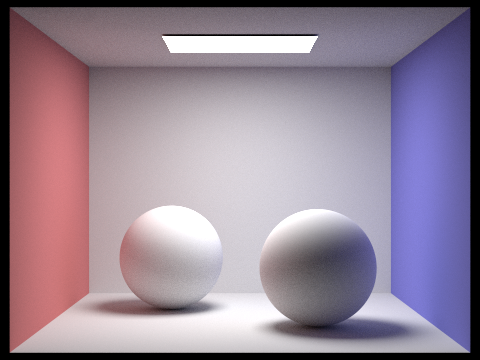
Direct vs. Indirect Illumination Only (CBbunny, s=1024)
To isolate direct illumination, set max_ray_depth=1. To isolate indirect only, remove
the one_bounce_radiance call from at_least_one_bounce_radiance and use
max_ray_depth>=2.
Unaccumulated Bounces: CBbunny, isAccumBounces=false
With isAccumBounces=false (the -o 0 flag), only the light arriving at
exactly the m-th bounce is returned. The 2nd bounce captures light that has reflected once
off a surface before reaching the camera — this is where most color bleeding originates, since red
and blue wall light first reflects off the floor/bunny and then reaches the camera. The 3rd bounce
and beyond contribute diminishing amounts of softly scattered fill light that rasterization cannot
produce at all, since rasterization has no notion of light traveling between diffuse surfaces.
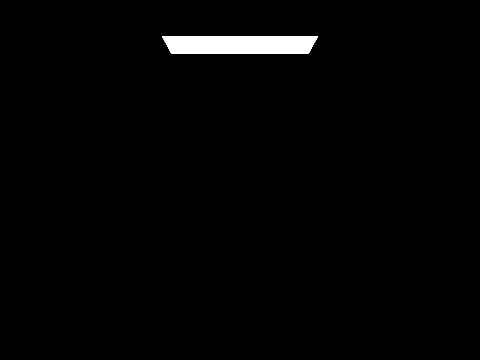
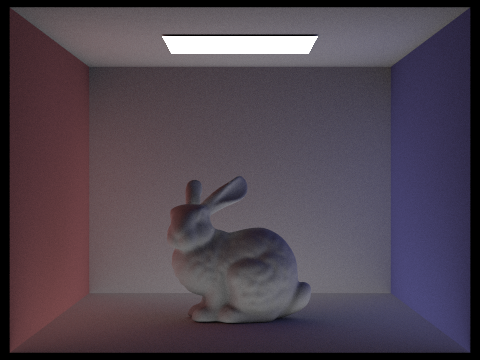
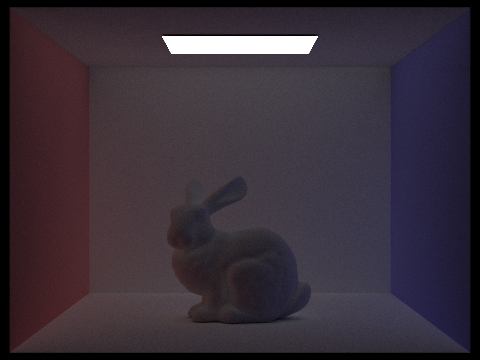
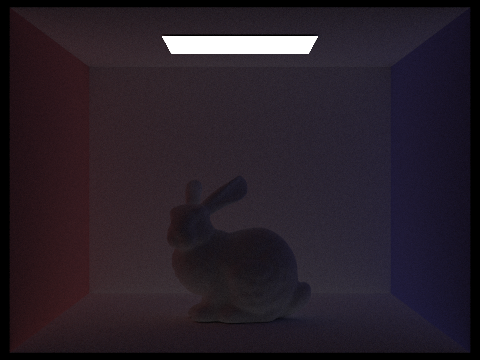
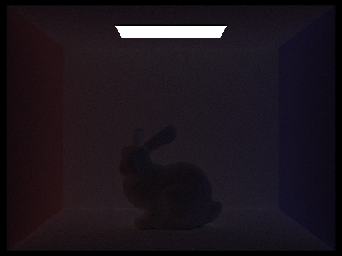
Accumulated Bounces: CBbunny, isAccumBounces=true
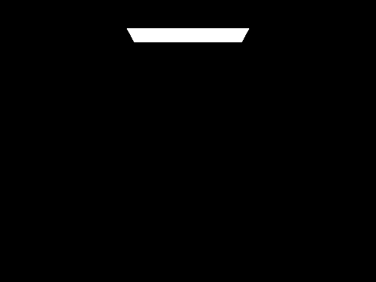
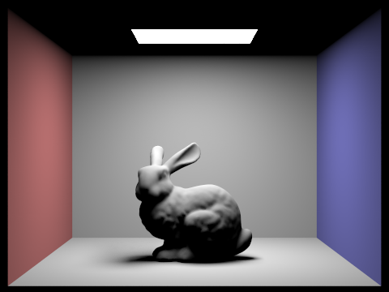
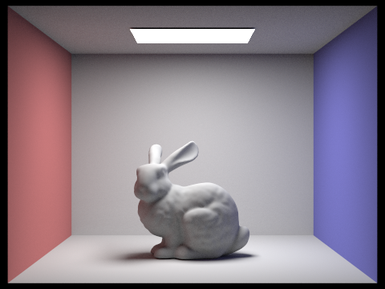
Russian Roulette: CBbunny at Various Max Depths (s=1024)
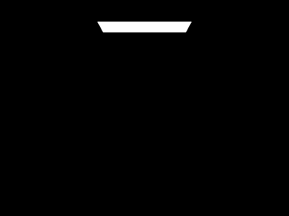
Sample Rate Comparison: CBbunny, l=4, varying s
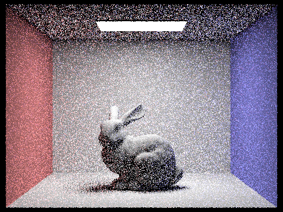
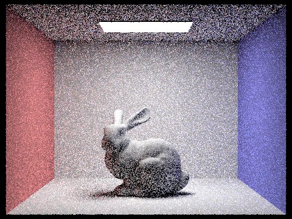
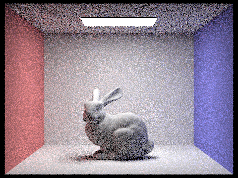
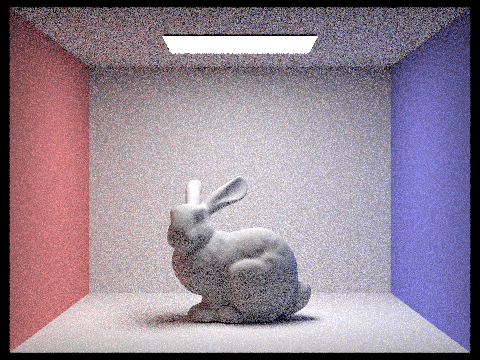
Part 5
Part 5: Adaptive Sampling
Algorithm & Implementation
Uniform sampling wastes computation on pixels that have already converged. Adaptive sampling detects convergence per-pixel using a statistical confidence interval and stops early once a pixel is stable. For each pixel we maintain two running sums over the illuminance \(x_k\) of each sample: \[ s_1 = \sum_{k=1}^{n} x_k \qquad s_2 = \sum_{k=1}^{n} x_k^2 \] From these we compute the mean \(\mu = s_1/n\) and variance \(\sigma^2 = \frac{1}{n-1}\!\left(s_2 - \frac{s_1^2}{n}\right)\). The convergence measure is the half-width of a 95% confidence interval: \[ I = 1.96 \cdot \frac{\sigma}{\sqrt{n}} \] We stop tracing rays for this pixel when \(I \leq \texttt{maxTolerance} \cdot \mu\) (default \(\texttt{maxTolerance} = 0.05\)), meaning we are 95% confident the true mean is within 5% of our estimate.
In raytrace_pixel, convergence is checked every samplesPerBatch samples
(default 32) to avoid the overhead of checking every single sample. When convergence is detected
early, sampleCountBuffer is written with the actual number of samples used, which
drives the false-color rate image: blue = few samples (converged quickly), red = many samples
(hard to converge).
Adaptive Sampling Results
Two scenes rendered with s=2048 -a 64 0.05 -l 1 -m 5. Each scene shows the
noise-free render alongside its sample rate image.
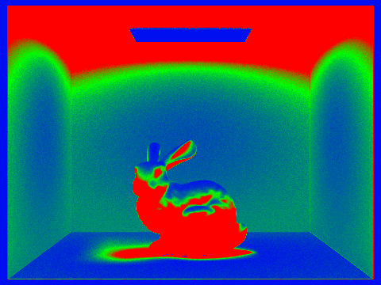
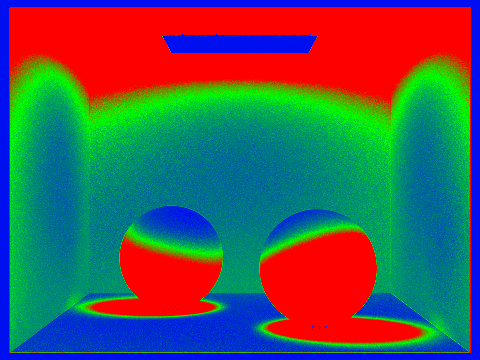